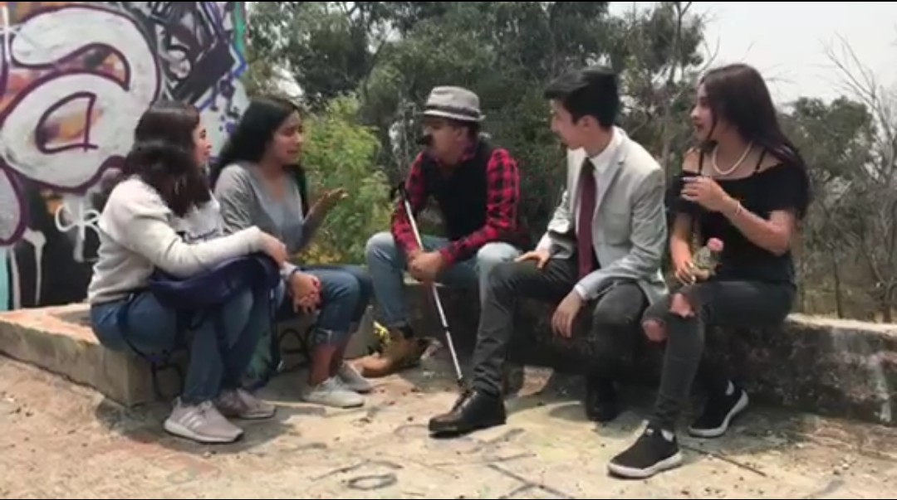

Obra creada
La historia trata de un asesinato que hay en un hostal, alguien mata a la esposa del encargado del hostal, y trataran de descubrir quien lo hizo.

El equipo esta conformado por:
Michelle castro
Astrid Fiesco
Sofia Reyes
Ximena Capulin
Alejandro Molina
El video se grabo en atlantis un parque abandonado.
GUION:
Título: “El caso de Fer en el Hostal Santo”
Autor: Manuel Martínez
7 personajes:
1. FER- 38 años, astuto e inteligente. Visita con su mujer Margarita el Hostal obligados por el mal tiempo. Es inspector de policía.
2. MARGARITA- 35 años, esposa de Fer acompaña a Fer en el viaje y se queda con él en el Hostal.
3. MARTIN- 43 años, encargado del Hostal. Vive aburrido con su mujer en el Hostal, esperando que su vida cambie.
4. JUAN- 28 años. Cliente del Hostal
5. ELENA- 26 años. Clienta del Hostal
6. ANCIANO- 63 años, cliente del hostal, está en este de paso mientras estudia las aves de la zona.
7. AGENTE DE POLCÍA
ACTO I
Hostal San Patricio situado en mitad de una carretera es lugar de paso para viajeros. La lluvia azota las ventanas de la sala de recepción, el encargado Martín espera aburrido a que entren en su Hostal.
El detective Fer y su esposa Margarita entran empapados, a toda prisa buscando refugio.
Fer (Sacudiéndose el cabello): Buenos noches, aunque eso de buenas es relativo.
(Martín asiente con la cabeza)
Fer: ¿Tiene habitaciones?
Martín: Claro, esto es un Hostal.
(Fer y Margarita se miran extrañados por un momento)
Fer: Ya… me refería a libres, si tiene habitaciones libres.
Martín: Ah, sí, sí. Ahora mismo solo está mi mujer, un matrimonio y un anciano que investiga las aves del lugar.
Margarita: ¿Tiene de matrimonio con baño propio?
Martín: No, ninguna habitación tiene baño propio. Hay un baño en la planta para todas las habitaciones.
Margarita: ¿Y tiene secador?
Martín: No, pero puedo dejarle uno propio, es antiguo pero funciona.
Margarita: Estupendo, muchas gracias.
Fer: Sólo nos quedaremos una noche.
(Martín abre el libro de habitaciones y empieza a rellenarlo)
Martin: ¿Nombre?
Fer: ¿Necesita el de los dos?
Martín: Con uno me basta.
Fer: Fernando Díaz Milton.
Martín: Déjeme una identificación.
(Fer saca de su cartera su identificación y se la da a Martín)
(Este se la da Martín que comienza a rellenar la hoja con los datos de la identificación)
*De repente el grito de una mujer se oye a lo lejos. Todos se asustan*
Margarita: ¿Qué ha sido eso?
Martín: No lo sé. Voy a preguntar.
Fer: Le acompaño.
Martin: No, quédese aquí, es mi responsabilidad.
Fer: Disculpe, soy policía.
Martín: ¿Cómo?
Fer: Inspector de policía, creo que es mejor que le acompañe.
ACTO II
Pasillo del hostal. La lluvia golpea la ventana del fondo del pasillo. Frente a la puerta abierta de la habitación está Margarita. Se acercan Juan y Elena, el matrimonio desde otra habitación y el anciano.
Anciano: ¿Qué ha pasado?
Margarita niega con la cabeza.
Juan: No se sabe nada por lo que parece.
Martin :(Desde la habitación. Voz en off) No, no, no… Mi pobre mujer, ¿quién ha hecho esto?, pienso acabar con quien haya hecho esto.
Martín sale corriendo de la habitación y atraviesa el pasillo sin mirar a los demás.
Anciano: Señor Martín…
Fer sale de la habitación y se reúne con los demás.
Fer: Dejen que se vaya.
Elena: Pobre hombre.
Margarita: Y que lo diga, una lástima.
Fer: Antes de que cada uno se vaya a su habitación. Podrían decirme que estaban haciendo ahora.
Juan: Nosotros estábamos en la habitación, íbamos a acostarnos ya.
Anciano: Usted quien es para preguntar nada, ¿qué se cree que es, Sherlock Holmes? Además yo repasaba mis apuntes mientras escuchaba la radio. No llegué a escuchar el grito, oí el todo el alboroto del pasillo y por eso salí a ver.
Fer: Está bien, váyanse a sus habitaciones, los agentes de policía vendrán en un rato, cuando la lluvia haya amainado. Y tendrán que hablar con ellos.
El Anciano se vuelve a su habitación.
Juan: Si podemos ayudar con algo, sólo díganoslo.
Juan y Elena se meten en su habitación.
Fer: Margarita ve a la habitación, voy a hablar con el otro huésped, aunque ya te digo que hay algo raro en todo esto.
Margarita: ¿A qué te refieres?
Fer: Pues que el cuerpo tiene los labios verdosos y eso creo que ya lo había visto antes. Además Martín ha ido a esa habitación sin dudarlo, no ha dudado en otras habitaciones.
Margarita se dirige a su habitación.
ACTO III
Sala de estar del Hostal. Martín junto con Margarita, Juan y Elena, y el Anciano; están sentados unos frente a otros. La lluvia ha cesado.
Martin: En cuanto venga la policía pienso hacer que se lo lleven anciano.
Anciano: ¿A mí?
Martín: Sí a usted, tuvo que ser usted quien la mató. ¿Quién sino iba a hacerlo?
Juan: Vamos a tranquilizarnos todos y a esperar que venga la policía, seguro que entonces todo se resolverá.
Martín: Me da igual la policía, seguro que usted se coló en la habitación de ella y cómo ella se asustó, usted la mató.
Anciano: Pero, ¿por qué tendría yo que haberlo hecho? Su esposa no me había hecho nada.
Martín: Entonces, ¿lo hicieron ellos, esta pareja joven?
Margarita: Está hablando por su boca el dolor, Martín. Seguro que todo tiene una explicación.
Anciano: Sí, que alguno de nosotros la ha tenido que matar, alguno de nosotros ha matado a una mujer que no conocía de nada en un Hostal al que sólo hemos venido por una noche, en m